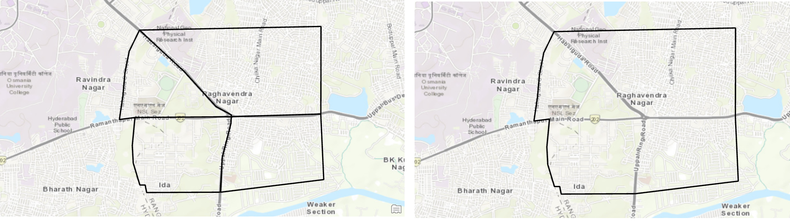
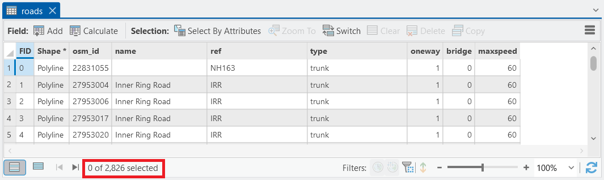
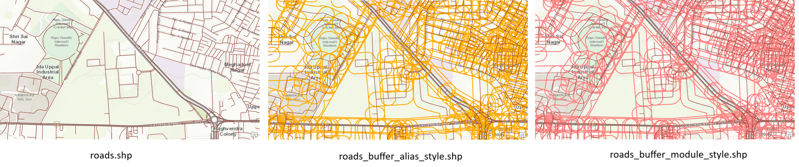
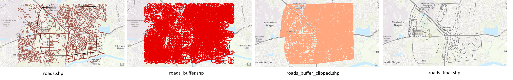

ArcPy is a Python site package provided with ArcGIS that allows you to automate geoprocessing tasks, perform spatial analysis, and manage spatial data.
By learning ArcPy, you can reduce repetitive manual work in ArcGIS and create reproducible workflows that are easy to share and maintain.
6.1 ArcPy Site Package
ArcPy provides access to almost all geoprocessing tools available in ArcGIS.
With ArcPy, you can:
Access and manipulate spatial datasets (shapefiles, feature classes, rasters)
Build custom workflows and scripts for repeated tasks
Code
import arcpy# Check ArcPy installation details# GetInstallInfo() returns a dictionary with version and product detailsinfo = arcpy.GetInstallInfo()print("ArcPy Version:", info["Version"])print("Product Name:", info["ProductName"])
ArcPy Version: 3.4
Product Name: ArcGISPro
6.2 The arcpy.env Workspace & Overwriting Outputs
ArcPy uses an environment workspace (arcpy.env.workspace) to know where to read inputs and save outputs. By default, if you give only a filename (not a full path), ArcPy assumes it is inside the workspace.
You can also allow scripts to overwrite outputs using arcpy.env.overwriteOutput which is convenient for development and testing.
Code
import arcpy# Set the workspace (where your input feature classes are stored)arcpy.env.workspace =r"D:/GIS_Data/OSM/shape"# Allow overwriting existing outputs (useful when re-running scripts during development)arcpy.env.overwriteOutput =True# Example: dissolve polygons based on an attribute fieldarcpy.Dissolve_management("zones.shp", "zones_dissolved.shp", "Type")print("Dissolve completed successfully!")
Dissolve completed successfully!

Dissolve
6.3 ArcGIS Geoprocessing Tools in Python
In ArcPy, geoprocessing tools are organized in two equivalent ways. You can call tools either directly from the arcpy namespace using the toolbox alias suffix, or from a module that matches the toolbox name. Both approaches execute the same underlying tool; choice depends on readability and coding style.
6.3.1 Two equivalent access styles
Toolbox-alias style (older / widely seen in scripts)
arcpy.GetCount_management(in_features)
Here the tool name is GetCount and _management indicates it belongs to the Data Management toolbox. The function is attached directly to the arcpy namespace with the toolbox suffix.
Module-based style (cleaner, recommended for readability)
arcpy.management.GetCount(in_features)
In this style tools are grouped by toolbox module (e.g., management, analysis, conversion) which helps organize code and makes it clearer which toolbox a tool belongs to.
Tip: Dragging a tool from the Geoprocessing pane in ArcGIS Pro to the Python window inserts a working function call showing the preferred syntax and parameter names for that tool.
Both return the same count — getOutput(0) extracts the tool’s primary return value (a string), so we convert it to int for numeric use.

Attribute table showing count
6.3.3 Example: Buffer Tool (two styles)
Code
import arcpyarcpy.env.workspace =r"D:/GIS_Data/OSM/shape"arcpy.env.overwriteOutput =True# Option 1: Alias stylearcpy.Buffer_analysis("roads.shp", "roads_buffer_alias_style.shp", "50 Meters")# Option 2: Module stylearcpy.analysis.Buffer("roads.shp", "roads_buffer_module_style.shp", "50 Meters")print("Buffer created successfully in both styles!")
Buffer created successfully in both styles!
Both commands create buffer outputs; the module style (e.g., arcpy.analysis.Buffer) groups the tool under its toolbox for clearer code organization.

Alias style and Module style
6.4 Getting Tool Documentation
ArcPy provides access to help/documentation for each tool, which is useful to learn required parameters, optional parameters, and usage examples.
Code
import arcpy# Get Python help for the Buffer toolhelp(arcpy.Buffer_analysis)# You can also examine the tool's parameter list programmaticallytool = arcpy.Buffer_analysisprint("Tool name:", tool.__name__)# Note: Certain introspection methods may vary; use ArcGIS Pro help for comprehensive docs.
Help on function Buffer in module arcpy.analysis:
Buffer(in_features=None, out_feature_class=None, buffer_distance_or_field=None, line_side: "Literal['FULL', 'LEFT', 'RIGHT', 'OUTSIDE_ONLY'] | None" = None, line_end_type: "Literal['ROUND', 'FLAT'] | None" = None, dissolve_option: "Literal['NONE', 'ALL', 'LIST'] | None" = None, dissolve_field=None, method: "Literal['GEODESIC', 'PLANAR'] | None" = None) -> 'Result1[str]'
Buffer_analysis(in_features, out_feature_class, buffer_distance_or_field, {line_side}, {line_end_type}, {dissolve_option}, {dissolve_field;dissolve_field...}, {method})
Creates buffer polygons around input features to a specified distance.
INPUTS:
in_features (Feature Layer):
The input point, line, or polygon features that will be buffered.
buffer_distance_or_field (Linear Unit / Field):
The distance around the input features that will be buffered.
Distances can be provided as either a value representing a linear
distance or a field from the input features that contains the distance
to buffer each feature.If linear units are not specified or are
entered as Unknown, the
linear unit of the input features' spatial reference will be used.When
specifying a distance, if the linear unit has two words, such as
Decimal Degrees, combine the two words into one (for example, 20
DecimalDegrees).
line_side {String}:
Specifies the sides of the input features that will be buffered. This
parameter is only supported for polygon and line features.FULL-For
lines, buffers will be generated on both sides of the line.
For polygons, buffers will be generated around the polygon and will
contain and overlap the area of the input features. This is the
default.LEFT-For lines, buffers will be generated on the topological
left of
the line. This option is not supported for polygon input
features.RIGHT-For lines, buffers will be generated on the topological
right of
the line. This option is not supported for polygon input
features.OUTSIDE_ONLY-For polygons, buffers will be generated outside
the input
polygon only (the area inside the input polygon will be erased from
the output buffer). This option is not supported for line input
features.This optional parameter is not available with a Desktop Basic
or
Desktop Standard license.
line_end_type {String}:
Specifies the shape of the buffer at the end of line input features.
This parameter is not valid for polygon input features.ROUND-The ends
of the buffer will be round, in the shape of a half
circle. This is the default.FLAT-The ends of the buffer will be flat
or squared and will end at
the endpoint of the input line feature.This optional parameter is not
available with a Desktop Basic or
Desktop Standard license.
dissolve_option {String}:
Specifies the type of dissolve that will be performed to remove buffer
overlap.NONE-An individual buffer for each feature will be maintained,
regardless of overlap. This is the default.ALL-All buffers will be
dissolved together into a single feature,
removing any overlap.LIST-Any buffers sharing attribute values in the
listed fields
(carried over from the input features) will be dissolved.
dissolve_field {Field}:
The list of fields from the input features on which the output buffers
will be dissolved. Any buffers sharing attribute values in the listed
fields (carried over from the input features) will be dissolved.
method {String}:
Specifies whether the planar or geodesic method will be used to create
the buffers. PLANAR-If the input features are in a projected
coordinate
system, Euclidean buffers will be created. If the input features are
in a geographic coordinate system and the buffer distance is in linear
units (meters, feet, and so forth, as opposed to angular units such as
degrees), geodesic buffers will be created. This is the default.
You can use the Output Coordinate System environment setting to
specify the coordinate system to use. For example, if the input
features are in a projected coordinate system, you can set the
environment to a geographic coordinate system to create geodesic
buffers.GEODESIC-All buffers will be created using a shape-preserving
geodesic
buffer method, regardless of the input coordinate system.
OUTPUTS:
out_feature_class (Feature Class):
The feature class containing the output buffers.
Tool name: Buffer
For practical guidance, use the Geoprocessing Pane in ArcGIS Pro and drag tools to the Python window to see example calls with the correct parameter order and named arguments.
import arcpyarcpy.env.workspace =r"D:/GIS_Data/OSM/shape"arcpy.env.overwriteOutput =True# Step 1: Buffer roadsarcpy.analysis.Buffer("roads.shp", "roads_buffer.shp", "100 Meters")# Step 2: Clip buffered roads by zonesarcpy.analysis.Clip("roads_buffer.shp","zones.shp", "roads_buffer_clipped.shp")# Step 3: Dissolve by zones to merge buffers inside each zonearcpy.management.Dissolve("roads_buffer_clipped.shp", "roads_final.shp", "Name")print("Workflow completed successfully!")
Workflow completed successfully!

workflow Buffer → Clip → Dissolve
Notes about parameters used above: Parameter names and order differ across tools; use help() or ArcGIS Pro tool help for exact usage or ArcPro Help.
6.6 Summary
In this chapter, we covered:
Two equivalent ways to call ArcPy geoprocessing tools: toolbox-alias style and module-based style.
Practical examples showing both styles (GetCount and Buffer).
How to set arcpy.env.workspace and arcpy.env.overwriteOutput.
How to access tool documentation and use ArcGIS Pro’s Python window for example code.
An example workflow chaining Buffer → Clip → Dissolve.
6.7 Exercises
Use arcpy.management.GetCount() to print the feature count for three different shapefiles in your workspace.
Write a script that buffers a layer, clips the buffer by a boundary, and summarizes the total buffered area per district.
Drag the Intersect tool from the Geoprocessing pane to ArcGIS Pro’s Python window and paste the generated code into a script; then explain the arguments.